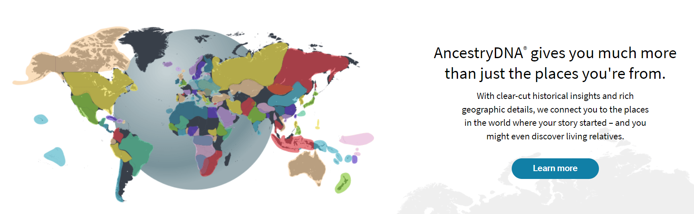

What is it?
Direct-to-consumer genetic testing has been a rapidly growing industry for several years now. [Company Facts | Ancestry Corporate] These tests involve a company, such as 23andMe or Ancestry DNA, sending a “kit” to a consumer, with which the consumer collects a genetic sample from themselves and sends the sample back to the company, which then analyzes that information and sends the user a report of some sort about their genetic information. These companies, in slick and impressive marketing campaigns, advertise themselves as a way to reconnect with your history, your ancestors, and even discover living relatives. [ancestrydna ad page] These all seem like very good things - however, since I decided to put it here, there must be something wrong with it. So what kind of ethical issues arise when companies have access to millions of peoples’ entire genomes? Oh, wait. I get it now.
What's the problem?
The main problem that I’d like to focus on is privacy. Privacy is, of course, a very important concern when people’s entire genomes - highly identifiable and unchangeable information - are in question; and in this sense, commercial genetic testing is probably even worse than you would imagine. Your genetic information is permanent identifying information about you - unlike, for instance, a credit card number, which can be changed if it ever gets out. In the wrong (or right, depending on your point of view) hands, your genome could be used to establish paternity of a child, accuse someone of a crime, prove genealogical connections, or even reveal private medical conditions. [NYT: Stalking strangers’ DNA to fill in the family tree] However, this issue only scratches the surface. There’s an argument to be made that if an individual decides they want to share such information about themselves and it doesn’t affect anyone else, they should be allowed to do that. But it doesn’t only affect them.
The Golden State Killer Case
From 1975 to 1986, a string of burglaries, sexual assaults, and murders was committed across California. These crimes were attributed to a mysterious “Golden State Killer,” who, after 1986, went quiet - the crimes stopped. Despite years of searching by the authorities, nothing came up. Then, in 2018, law enforcement announced that they had caught the Golden State Killer - and in June of 2020, Joseph DeAngelo pleaded guilty to the crimes. About a month later, he was convicted and sentenced to life in prison without the possibility of parole. [ABC golden state killer article] However, Joseph DeAngelo had never taken a commercial DNA test, and he wasn’t named in the American law enforcement DNA database, called CODIS, until after he was already a suspect. So how was he captured?
Enter GEDmatch, an online service which allows people to upload their raw DNA test results from another provider (such as 23andMe or AncestryDNA) to be analyzed against GEDmatch’s database in order to find relatives. [gedmatch homepage] 23andMe and AncestryDNA both have extensive privacy policies limiting what can be done with their data - and they do not allow law enforcement to search their databases. However, GEDmatch, at the time, had no such restrictions in their terms of service. [veritaseum video] Again, though, DeAngelo had never taken such a test, so he wouldn’t have been in the GEDmatch database either. Instead, investigators were betting that among the 1.8 million people in the GEDmatch database would be a relative of DeAngelo’s. [PBS genetic genealogy article] This is based on the basic principle that we are all related, if you go back far enough; if you have DNA results of a third cousin of the DNA recovered from a crime scene, then you will be able to trace the family tree back to a common great-great grandparent. If you have a second cousin, a great-grandparent. This will leave you with a long list of possible people who might be suspects, and from there, you can use information that you already have about a suspect and traditional investigation techniques to narrow down the list until you have a manageable number of people from whom to take DNA to confirm your results.
In this way, your genetic material is not only identifying information about you, but also about hundreds, perhaps over a thousand of your current and future relatives. Publicly sharing your genetic information illuminates information not only about you, but also about many relatives that you may never even meet.